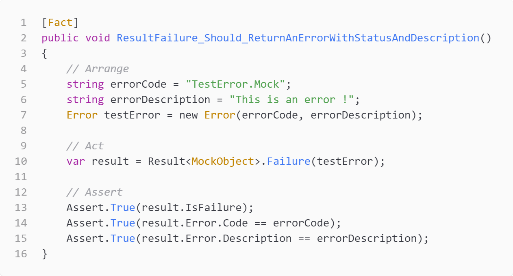
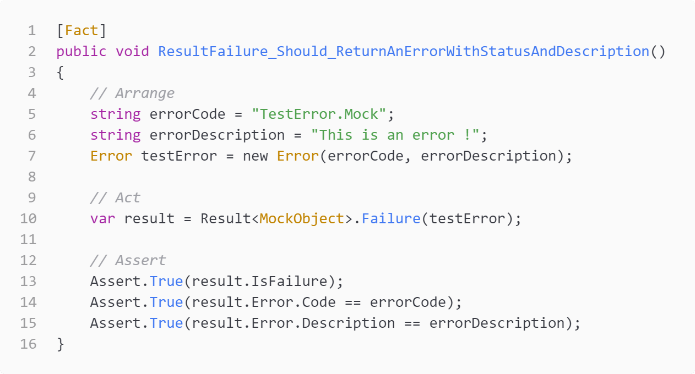

Qui sommes nous ?
Qui sommes nous ?

Mise en situation
Disclaimer : Cette mise en situation est imaginaire.
Les personnes et les événements figurant dans cette présentation sont purement ficitfs.
ou presque ...
Comment optimiser le process de code review ..?
Qu'est ce qu'on cherche à obtenir ?
Qu'est ce qu'on cherche à obtenir ?

Qu'est ce qu'on cherche à obtenir ?

Quels axes ?
- Lisibilité du code
- Conformité du code aux standards
- Pérénité du code et de l'architecture du projet dans le temps
Et si on utilisait des tests unitaires ?
Et si on utilisait des tests unitaires ?
 

En programmation informatique, le test unitaire [...] est une procédure permettant de vérifier le bon fonctionnement d'une partie précise d'un logiciel ou d'une portion d'un programme (appelée « unité » ou « module »).
En programmation informatique, le test unitaire [...] est une procédure permettant de vérifier le bon fonctionnement d'une partie précise d'un logicielou d'une portion d'un programme (appelée « unité » ou « module »).